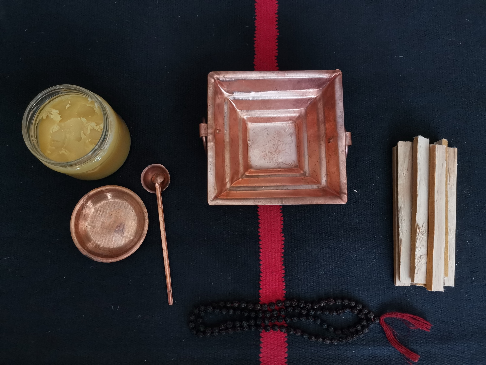
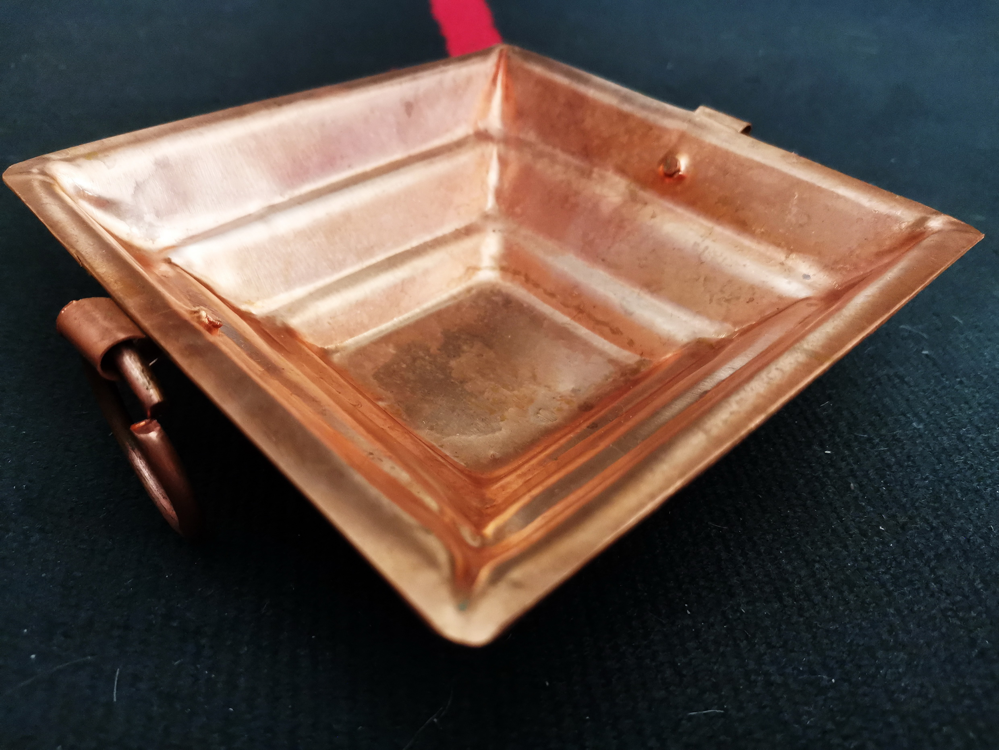
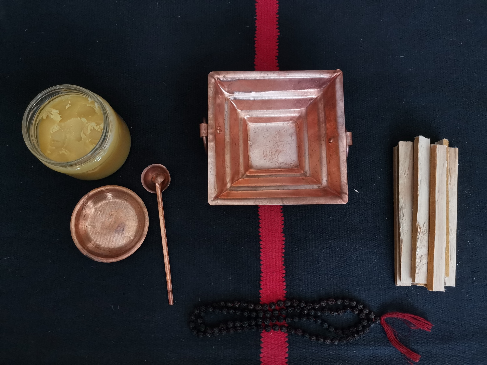
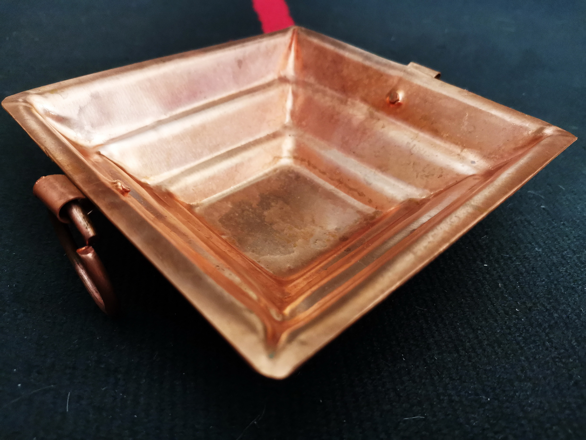

Эта кунда добавит элегантности и очарования вашему помещению для пудж и хавана. Структура самой кунды генерирует энергию, необходимую для выполнения ритуалов. Она изготовлена из меди в соответствии с подлинными ведическими предписаниями. Кунду можно использовать дома, в храме или при проведении ведических обрядов.
Хаван - священный огненный ритуал, который проводят в ведической традиции. Хаван - это техника, переданная Риши и другими Просветленными Мастерами, для достижения определенного желаемого результата в нашей жизни. Способ достижения желаемого результата и его сила делают хаван уникальным компонентом ведической традиции. В типичной хоме священослужитель с помощью специальных мантр призывает присутствие Божества в огонь. Поскольку мантры были открыты Просветленными мудрецами, они все несут в себе огромную силу. Наполнившись до окончания хомы энергией, сам огонь становится Божеством. Затем, в конце каждой мантры предлагается несколько подношений (ахути) огню с использованием самагри для хавана. Дым, исходящий из очага, хома-кунды, заряжает энергией все пространство, в котором проводится хома, и оказывает благотворное влияние в этом месте.
Считается, что медь может уничтожить злых духов, таких как Раджанд Там (то есть тьму и дурное поведение), а также обладает способностью поглощать саттвические вибрации божеств и передавать их участникам хавана или пуджи. Таким образом, за короткое время она может наполниться божественной энергией.
Священный огонь действует как связующее звено между сознанием человека и космическим сознанием.
Веды, древнейшая мудрость, открытая человеку, советуют выполнять агнихотру, чтобы человек мог сформировать фундаментальное отношение к своей жизни с точки зрения тела, ума и души. Агнихотра - это нитья яджна. Нитья обозначает ее постоянную природу. Согласно Ведам, агнихотру следует совершать каждый вечер и каждое утро, т.е. точно во время местного восхода или заката солнца. «Агни» означает огонь, а «хотра» означает подношение. Таким образом, агнихотра - это акт подношения Агни - огню. Это не просто ритуал, но неотъемлемая часть ведической науки. Эту яджню следует выполнять регулярно на протяжении всей жизни. Яджня - это технический термин ведической биоэнергетики, обозначающий процесс устранения токсичных обстоятельств окружающего пространства посредством огня. Это означает очищение окружающего пространства огнем в качестве посредника. Когда окружающее пространство очищается, это пространство потом очищает человека. Как и любая другая яджня, агнихотра выполняется особым образом. При выполнении Агнихотры необходимо соблюдать определенные правила. После небольшой практики каждый сможет выполнять ее. На выполнение требуется не более 5-10 минут.
Процедура выполнения
Агнихотра выполняется дважды в день. Для этого необходим медный сосуд в форме полупирамиды - кунда. Кунду помещают на огнеустойчивое место, т.к. когда в ней разжигают огонь, она сильно нагревается. Огонь в кунде разжигают с помощью сухих коровьих лепешек. Кусочки лепешек следует располагать так, чтобы в кунде была хорошая вентиляция. Вначале в самый низ поместите небольшой кусок, а затем разместите другие кусочки один над другим, чтобы между ними оставался зазор. Для разжигания огня можно использовать гугул, камфору или ватный фитиль, пропитанный коровьим топленым маслом гхи. Следует строго избегать использования любых нефтепродуктов. Для подношения понадобится необработанный рис. Достаточно 30-35 зернышек для подношения. Это почти две щепотки сырых цельных рисовых зерен, смазанных топленым маслом из коровьего молока. Для этого достаточно двух-трех капель топленого масла. Затем правой рукой совершите подношения. Подношения выполняются с повторением двух очень простых ведических мантр.
Мантры при восходе:
Сурьяя Сваха
(Добавьте в огонь первую порцию риса, смешанного с несколькими каплями топленого масла)
Сурьяя Идам На Мама Праджапатайе Сваха
(Добавьте в огонь вторую порцию риса, смешанного с несколькими каплями гхи)
Праджапатайе Идам На Мама
Мантры при закате:
Агнайе Сваха
(Добавьте в огонь первую порцию риса, смешанного с несколькими каплями гхи)
Агнайе Идам На Ма Праджапатайе Сваха
(Добавьте в огонь вторую порцию риса, смешанного с несколькими каплями гхи)
Праджапатайе Идам На Мама
Материал изделия: медь
Размеры: 140 (Ш) х 140 (Д) х 40 (В) миллиметров (примерно)
Производство: Индия (приобретено в священном городе Варанаси)
ЦЕНА: 500 грн.
 


